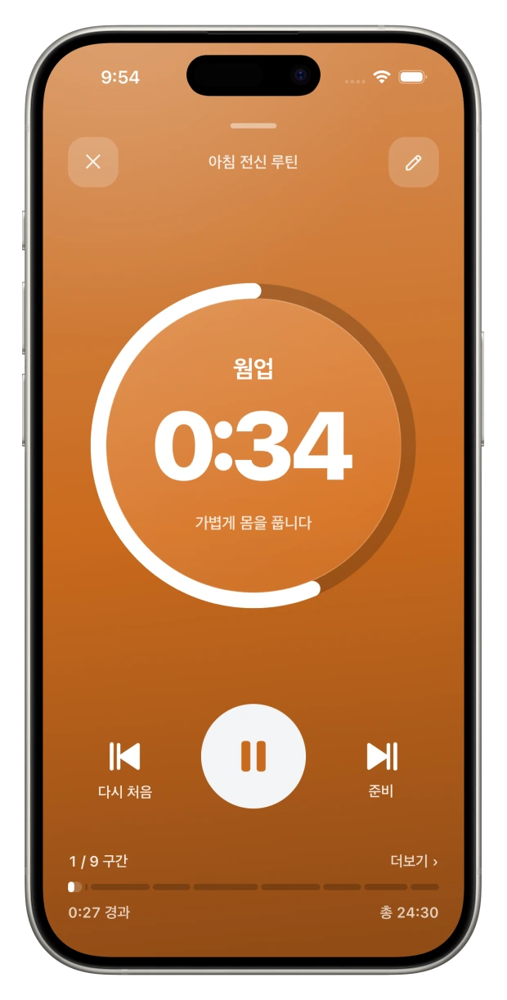
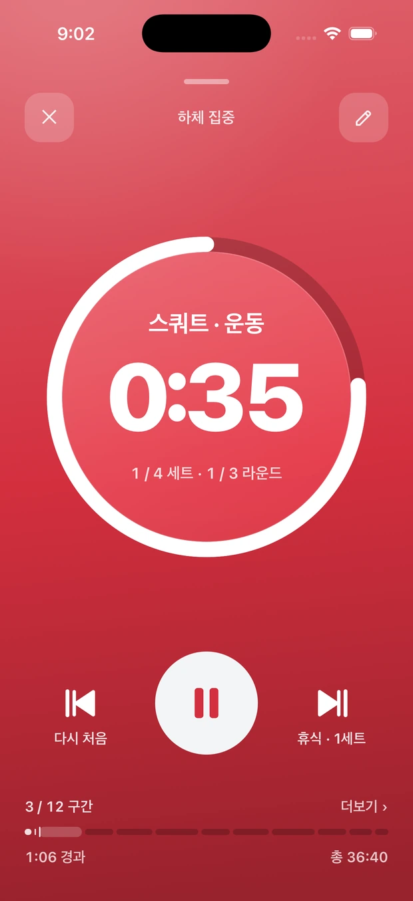
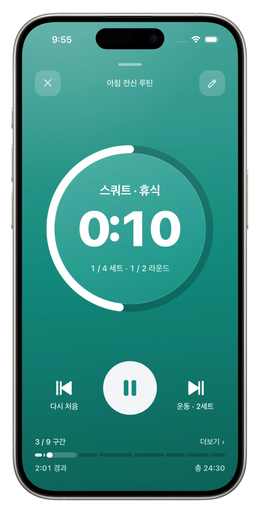
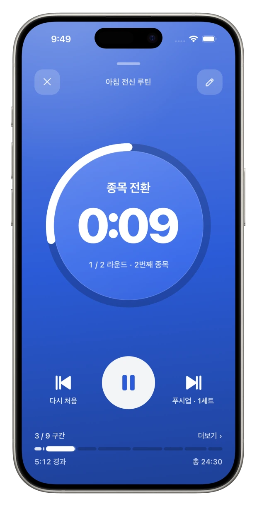
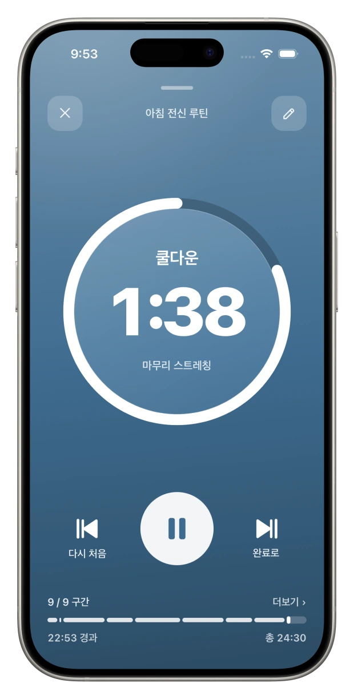
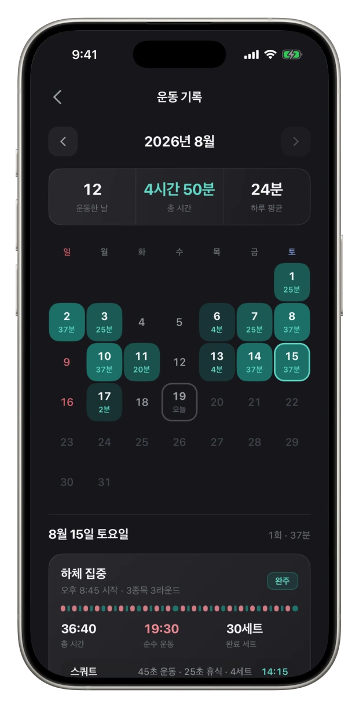

01
다음 구간은 소리로.
화면에선 색으로, 주머니에선 소리와 진동으로 구간을 알려줘요. 앱을 완전히 종료해도 알림은 울려요.
핵심 타이머 기능 무료
운동 시간부터 세트 사이 휴식까지, 인타바가 알아서 알려드려요. 타이머를 보지 않아도 계획한 운동을 이어갈 수 있어요.
iOS용 · 로그인 없이 시작 · 한국어 외 3개 언어 지원





운동에서 휴식으로 넘어가면 화면 색도 함께 바뀌어요.
화면을 보지 않을 땐 소리와 진동이 알려줘요.
01
화면에선 색으로, 주머니에선 소리와 진동으로 구간을 알려줘요. 앱을 완전히 종료해도 알림은 울려요.
02
기본 설정에서는 알림이 울려도 듣던 음악이 멈추거나 작아지지 않아요. 음악과 구분해 들을 수 있도록 알림음을 따로 만들었어요. 알림음이 더 또렷했으면 할 땐, 설정에서 알림음이 나오는 동안만 음악을 잠깐 줄일 수도 있어요.
03
운동을 마치면 총 시간과 실제로 운동한 시간, 완료한 세트가 달력에 자동으로 저장돼요. 따로 입력하거나 저장 버튼을 누를 필요 없어요. 로그인하면 다른 기기와도 동기화할 수 있어요.
30초든 2분이든, 정해 둔 휴식 시간이 끝나면 인타바가 알려드려요. 세트 사이와 종목 사이의 휴식을 알아서 재 주니, 매번 스톱워치를 다시 맞출 필요가 없어요.
운동 목표에 맞게 정한 휴식 시간을 매 세트 같은 길이로 지킬 수 있어요.
벤치프레스40초 운동 · 1분 30초 휴식 · 4세트
구간이 바뀔 때마다 소리와 진동으로 알려줘요
남은 시간은 잠금 화면과 다이내믹 아일랜드에서 확인하세요. 세트 사이마다 앱으로 돌아갈 필요 없어요. 다이내믹 아일랜드는 이를 지원하는 iPhone에서 보여요.
총 시간과 실제로 운동한 시간, 완료한 세트까지 자동으로 기록돼요. 달력에는 운동한 날마다 청록색이 짙고 옅게 남아, 한 달의 운동을 돌아보기 좋아요.

왜 만들었나
운동할 때마다 타이머를 확인하는 게 번거로웠어요. 세트가 끝나면 휴식 시간을 맞추고, 얼마나 남았는지 들여다보고, 다시 운동을 시작하는 일이 계속 반복됐죠. 쓰던 타이머가 구독제로 바뀐 것도 직접 만들게 된 계기였어요.
운동 시간과 휴식 시간을 미리 정해 두면, 운동 중에는 폰을 내려놓아도 돼요. 다음 세트가 시작될 때 인타바가 알려주니까요.
운동에 필요한 핵심 타이머 기능은 누구나 무료로 쓸 수 있게 지켜 갈게요.
인타바는 제가 매일 쓰는 앱이기도 해요. 앞으로도 운동에 집중하는 경험을 가장 먼저 생각하며 만들어 갈게요.